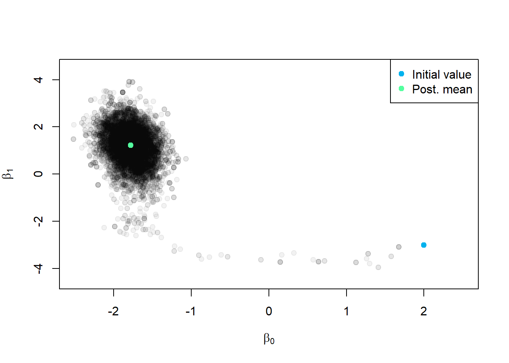
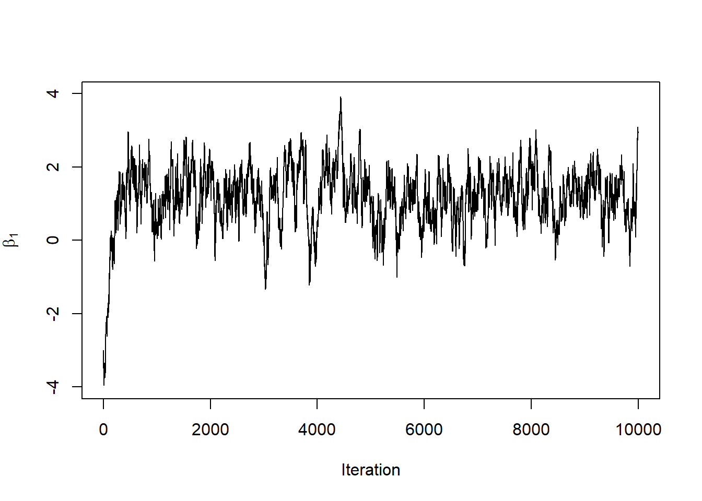
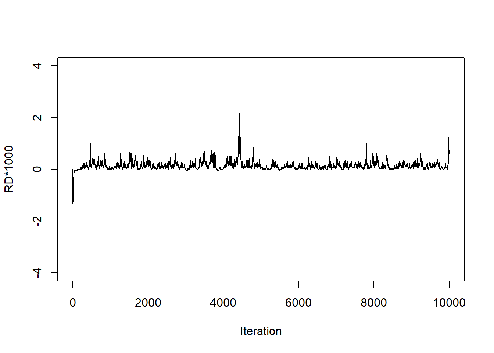
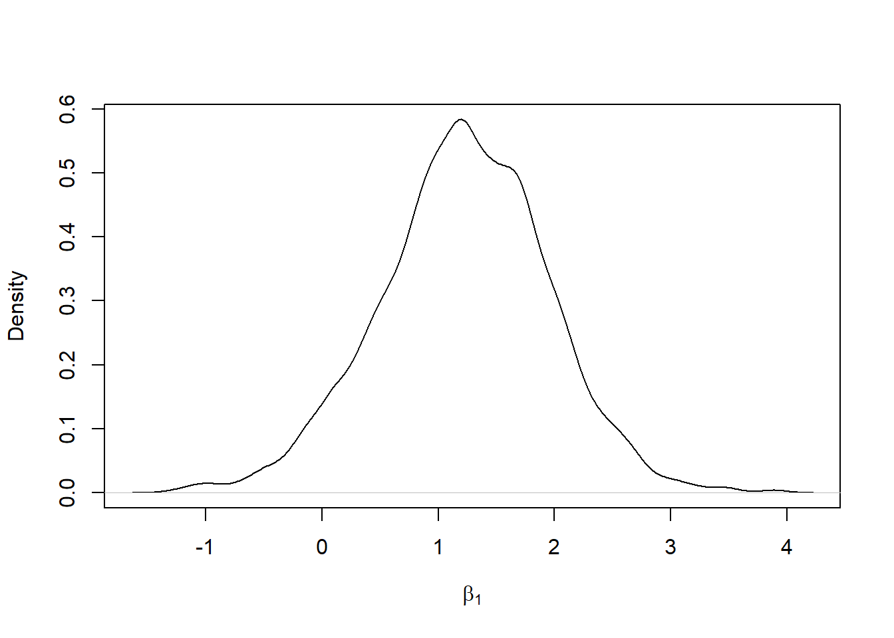
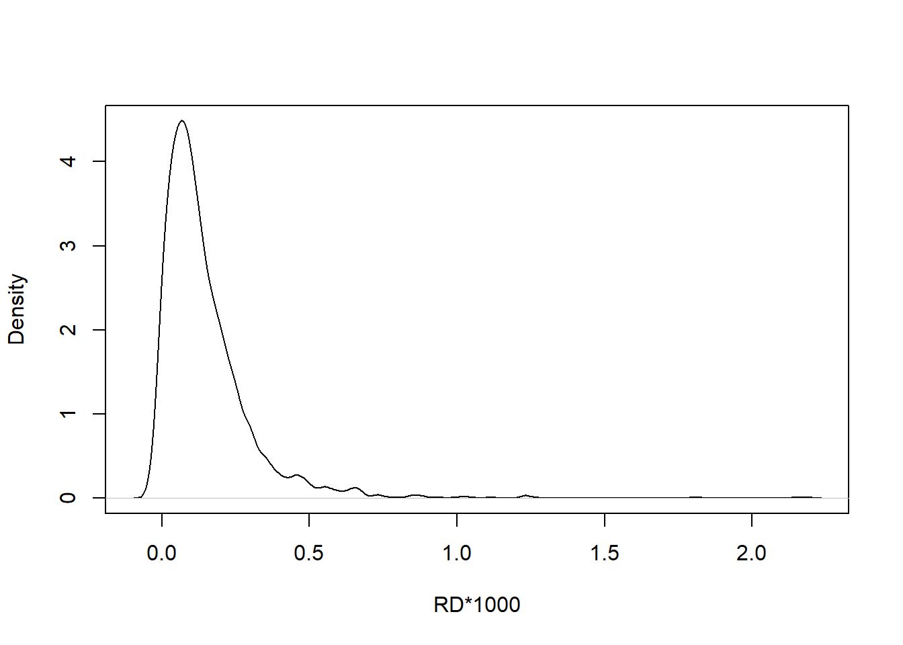

Chapter 3 Metrópolis de paseo aleatorio
3.1 Concepto y funcionamiento de algoritmo
El algoritmo de Paseo Aleatorio Metropolis (algoritmo Random Walk Metropolis en inglés) es un método de Monte Carlo Markov Chain (MCMC) utilizado para explorar distribuciones de probabilidad, especialmente en problemas de inferencia bayesiana. A continuación, se proporciona una explicación detallada de los conceptos y pasos relacionados con este algoritmo.
Definición del problema: El algoritmo de Paseo Aleatorio Metropolis se utiliza para aproximar la distribución de probabilidad de una variable aleatoria de interés, dada una función objetivo o distribución objetivo. Esta distribución objetivo puede ser la distribución posterior en un problema de inferencia bayesiana.
Generación de una cadena de Markov: El algoritmo de Paseo Aleatorio Metropolis genera una cadena de Markov, que es una secuencia de estados que evoluciona de acuerdo con ciertas reglas de transición. Cada estado de la cadena representa una posible configuración de la variable aleatoria de interés.
Propuesta de un nuevo estado: En cada paso de la cadena, se propone un nuevo estado basado en el estado actual. En el caso del algoritmo de Paseo Aleatorio, el nuevo estado se obtiene agregando un ruido aleatorio al estado actual. Comúnmente, se utiliza una distribución normal para generar este ruido, con una media de cero y una variación que se ajusta para controlar la amplitud de los pasos.
Evaluación de la aceptación: Una vez que se propone un nuevo estado, se evalúa si se acepta o se rechaza. Esto se hace calculando la razón de aceptación, que es la proporción entre la densidad de probabilidad de la distribución objetivo evaluada en el nuevo estado propuesto y la densidad de probabilidad evaluada en el estado actual. Si la razón de aceptación es mayor o igual a uno, se acepta el nuevo estado. Si es menor que uno, se acepta el nuevo estado con una probabilidad igual a la razón de aceptación.
Actualización del estado: Si se acepta el nuevo estado, se actualiza el estado actual de la cadena con el nuevo estado propuesto. Si se rechaza, se mantiene.
3.2 Implentación en R
# initialize
M=10000 # Numero de muestras que se generarán en el algoritmo
set.seed(91828) # Semilla para inicializar el generador de números aleatorios.
beta_post = matrix(nrow=M, ncol=2) # Matriz para almacenar coeficientes del modelo
colnames(beta_post) = c('beta0', 'beta1') # Se asgina nombres a las dos columnas
accept = numeric(M) # vector númerico con M muestras
rd = numeric(M) # vector númerico con M muestras
beta_post[1,] = c(2,-3) # se establece la primera fila con valores iniciales (2, -3)
rd[1] = riskdifference(y, x, beta_post[1,]) # dif. de riesgo de las estimaciones
accept[1] = 1 # Vector para registrar si la muestra es aceptada (1) o rechazada (0)
for(i in 2:M){
oldb = beta_post[i-1,] # almacena coeficiente de la muestra anterior
prop = rnorm(2, sd=0.2) # Genera una muestra para nuevos coeficientes
newb = oldb+prop # Calcula los nuevos coeficientes al sumar la propuesta
num = loglik(y,x,newb) # Calculan el logaritmo de verosimilitud para newb
den = loglik(y,x,oldb) # Calculan el logaritmo de verosimilitud para oldb
acceptprob = exp(num-den) # calcula la /p de aceptar la nueva muestra
acc = (acceptprob > runif(1)) # aceptar o rechazar la nueva función anterior
if(acc){
beta_post[i,] = newb # se almacenan si es aceptada
accept[i] = 1
}else{
beta_post[i,] = oldb
accept[i] = 0
}
# Calcula y almacena la diferencia de riesgo para cada conjunto de estimaciones
rd[i] = 1000*riskdifference(y, x, beta_post[i,])
}3.3 Resultados e interpretación
La variable accept se utiliza para hacer un seguimiento de cuántas de las muestras generadas son aceptadas por el algoritmo, esta variable proporciona una medida de la tasa de aceptación promedio durante todas las iteraciones del algoritmo, una tasa de aceptación de aproximadamente \(0.6551\) sugiere que el algoritmo de Metropolis-Hastings aceptó alrededor del \(65.51\%\) de las muestras generadas, lo que generalmente es una tasa razonable y puede indicar un buen equilibrio entre la exploración eficaz y la convergencia en el espacio de parámetros.
[1] 0.6551El resumen estadístico de las muestras de los parámetros beta0 y beta1 revela información clave sobre la distribución de las estimaciones obtenidas a través del algoritmo. Para el parámetro \(beta0\), los valores varían desde aproximadamente \(-2.518\) hasta \(2.000\), con una mediana y media en torno a \(-1.776\) y \(-1.770\), respectivamente. En cuanto a \(beta1\), oscila entre \(-3.9483\) y \(3.9189\), con una mediana y media cercanas a \(1.2292\) y \(1.1714\). Estos estadísticos resaltan la variabilidad y proporcionan una estimación central de los parámetros.
beta0 beta1
Min. :-2.518 Min. :-3.9483
1st Qu.:-1.902 1st Qu.: 0.7389
Median :-1.776 Median : 1.2292
Mean :-1.770 Mean : 1.1714
3rd Qu.:-1.651 3rd Qu.: 1.7004
Max. : 2.000 Max. : 3.9189 Se calcula la media de las muestras posteriores de beta0 y beta1, excluyendo las primeras \(1000\) muestras, esto se hace comúnmente para eliminar las iteraciones iniciales del algoritmo que pueden no haber convergido completamente y para obtener una estimación más precisa de la media posterior. El resultado indica que después de eliminar las primeras \(1000\) muestras (que a menudo se descartan como “quemado inicial”), la media posterior estimada para beta0 es aproximadamente \(-1.78\) y la media posterior para beta1 es aproximadamente \(1.22\).
init = beta_post[1,]
postmean = apply(beta_post[-c(1:1000),], 2, mean)
cat("Posterior mean\n", round(postmean, 2))Posterior mean
-1.78 1.22El gráfico muestra visualmente cómo evolucionaron las muestras de los parámetros \(beta0\) y \(beta1\) a lo largo de las iteraciones del algoritmo, desde el valor inicial (Azul) hasta la media posterior (verde). Esto puede ayudar a comprender cómo convergieron las estimaciones y cómo se distribuyen las muestras posteriormente:
plot(beta_post, pch=19, col=rgb(0,0,0,0.05), xlab=expression(beta[0]), ylab=expression(beta[1]), xlim=c(-2.5,2.5), ylim=c(-4.5,4.5))
points(init[1], init[2], col="deepskyblue2", pch=19)
points(postmean[1], postmean[2], col="seagreen1", pch=19)
legend("topright", col=c("deepskyblue2", "seagreen1"), legend=c("Initial value", "Post. mean"), pch=19)
Muestra cómo cambian las estimaciones de \(beta1\) a medida que se ejecutan más iteraciones del algoritmo:

Muestra cómo cambia la Diferencia de Riesgo multiplicada por \(1000\) a medida que se ejecutan más iteraciones del algoritmo. Este tipo de gráfico es útil para observar la convergencia de las estimaciones de la Diferencia de Riesgo a lo largo del tiempo y para evaluar la variabilidad en las estimaciones:

Muestra cómo se distribuyen las estimaciones posteriores de beta1 después de eliminar el “quemado inicial”. Este tipo de gráfico es útil para visualizar la incertidumbre en las estimaciones de los parámetros y para identificar modas (picos) en la distribución:

Muestra cómo se distribuyen las estimaciones de la Diferencia de Riesgo después de eliminar el “quemado inicial”. Este tipo de gráfico es útil para visualizar la incertidumbre en las estimaciones de la Diferencia de Riesgo y para identificar modas (picos) en la distribución:
